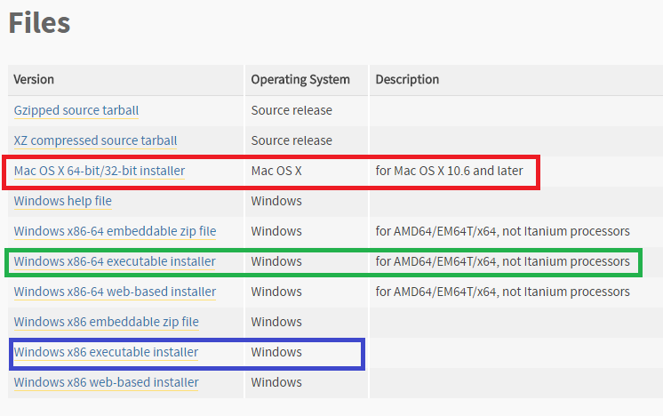
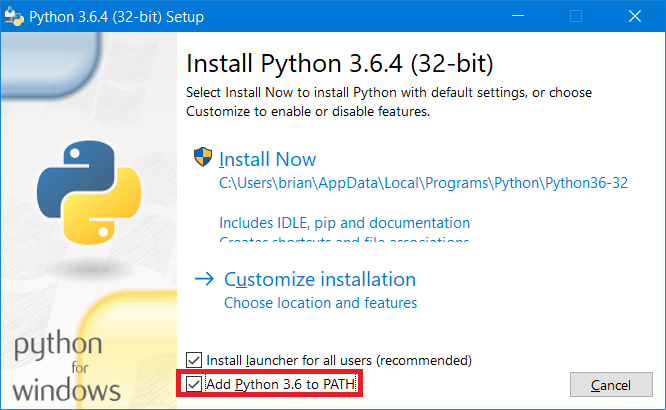
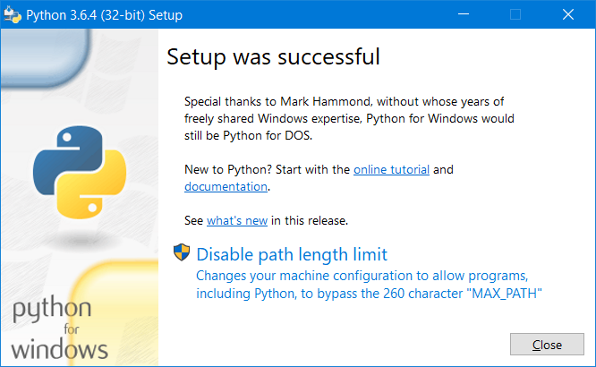
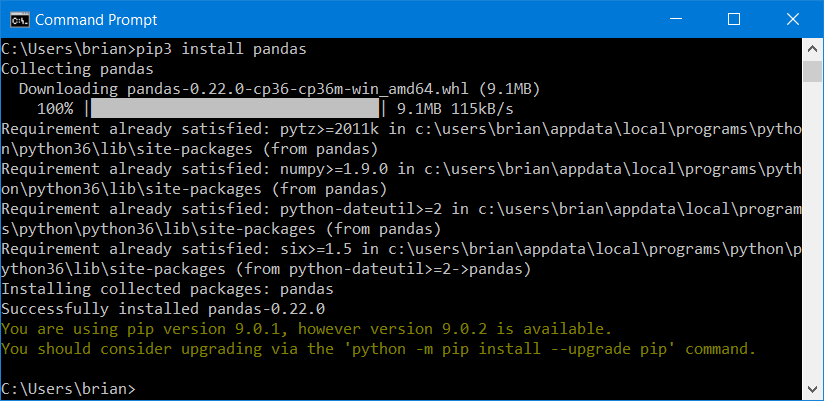
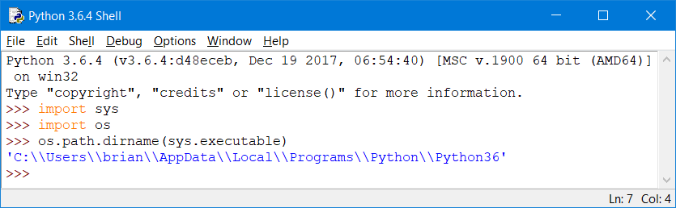
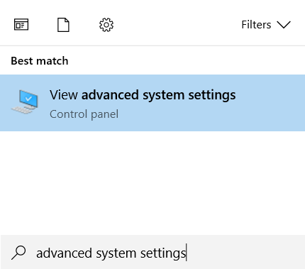
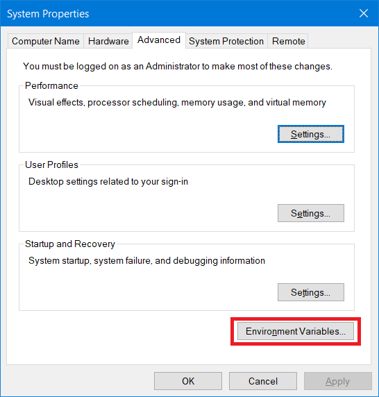
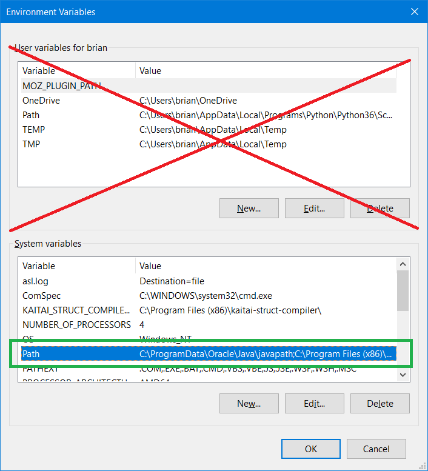
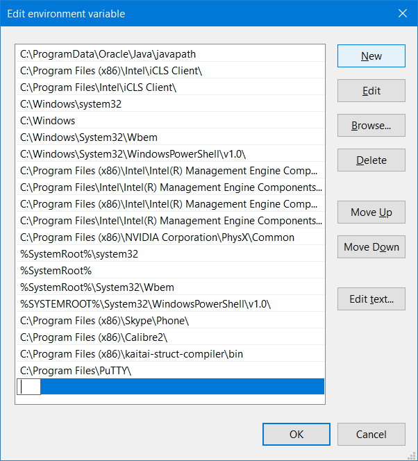

Intro
This guide will teach you to set up Python 3 and the necessary packages for the course on your personal computer. All of the lab computers have these resources, but having a proper set up at home will allow you more time for practice and more convenience for completing assignments.
Table of Contents
- Installing Python 3
- Installing Packages
- Installing Packages for Anaconda/Spyder
- IDLE Looks Blurry?
Written by Brian Campbell. Last Updated 3/18/18
Installing Python 3
If you haven't installed Python 3 yet, you can grab the latest edition
from the Python official website here. At the top of the site, you'll see two buttons like below. Be sure to click the one on the left.

After clicking that, you'll be redirected to another page. Scroll to the bottom of that one, and you'll see several files you can download.

- If you're using a Mac, download the one that says Mac OS X 64-bit/32-bit installer (marked in Red above).
- If you're running Windows you'll want one of the other two. If you're running a 64-bit version of Windows, click the green one. If you no clue what that last sentence meant, just click the blue one, labeled Windows x86 executable installer.
Download the appropriate installer and run it. If you're running a Mac, just follow the directions.
If you're running Windows, be sure to check the box that says "Add Python 3 to PATH"!

This will make installing packages (and life) a lot easier! Then hit "Install Now".
At the end of installation (for Windows), you'll see this last option marked "Disable path length limit".

Click on it, and allow it. At this point, you now have Python 3 installed on your computer! You can open the program called IDLE (if it's not on your Desktop/Launcher, you can just search for it) to test it out. For this class however, you'll need some additional packages in order to complete all of the assignments and work through the labs. See the next part of this guide for details.
Adding Packages to Python 3
If you're using a Mac, running some distro of Linux, or are using Windows and followed the tutorial above, this will be really simple.
- If you're using a Mac / Linux, you'll need to open up a terminal. You can just search the word "terminal" from launchpad.
- If you're running Windows, you'll need to open up a command prompt, just press the Windows key and search "cmd" or "command prompt" and open it up.
Once your terminal is open, just type the following and hit enter:
pip3 install *package_name_here*
Replace *package_name_here* with the package you want to install. As an example, if I wanted to install the package named
pandas I'd type:
pip3 install pandas
And as a result, I'd get something like this, indicating that the package has successfully been installed. You should now be able to use that package when working with Python. You now have everything you need to do the assignments for on your own personal computer.

If your command prompt can't find pip3:
This means the command prompt doesn't know where pip3 is on your computer. This will be the case if you didn't check "Add Python 3 to PATH" when installing Python. We can remedy this with the following steps.
First, we need to find the folder pip3 is installed in.
Open up IDLE. Don't open a new file. Type these commands directly into IDLE, one line at a time.
import sys
import os
os.path.dirname(sys.executable)

Copy the directory IDLE displays for you (don't include the 's). To the end of that directory, add \Scripts.
As an example, my full directory would look like this:
C:\\Users\\brian\\AppData\\Local\\Programs\\Python\\Python36\Scripts
Now, we have to make sure our command prompt can see it.
Hit the windows key, and search for "advanced system settings". Click the result.

A window will pop up. Press the button that says "Environment Variables".

Another window will pop up. Look at the bottom half. Under the "System variables" heading, you'll see
several fields. Double click the one that says "Path" (highlighted in green, below).

One final box will appear. If you're running Windows 10, it'll look like the picture below. Press the button on the right that says "New", and then paste that directory we found a few steps earlier in that new field. Be sure it ends with "\Scripts". You can press OK to close that box, and the subsequent boxes.

If you're running an earlier version of Windows, then you'll just get a single box with two fields (pictured below). DO NOT DELETE ANYTHING FROM THIS BOX.

Just scroll to the end of the field labeled "Variable value:" and to the end of it, add a semicolon ( ; ), followed by the directory we found a few steps earlier (which should end with "\Scripts").
So it would look something like this:
*Anything in this field previously*;*Your pip3 directory*
Now that this is done, command prompt will be able to find pip3. Scroll up to the top of this section and follow the directions there.